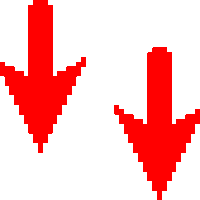

HOME PAGE

The Conservatism of Emoji
By Luke Stark and Kate Crawfordaugust 20.2014
Emoji offer you new possibilities for digital expression, but only if you’re speaking their language
If you smile through your fear and sorrow
Smile and maybe tomorrow
You’ll see the sun come shining through for you
—Nat King Cole, “Smile”
The world will soon have its first emoji-only social network: Emoj.li. This news, announced in late June, was met with a combination of scorn and amusement from the tech press. It was seen as another entry in the gimmick-social-network category, to be filed alongside Yo. Yet emoji have a rich and complex history behind the campy shtick: From the rise of the smiley in the second half of the 20th century, emoji emerged out of corporate strategies, copyright claims, and standards disputes to become a ubiquitous digital shorthand. And in their own, highly compressed lexicon, emoji are trying to tell us something about the nature of feelings, of labor, and the new horizons of capitalism. They are the signs of our times.
Innocuous and omnipresent, emoji are the social lubricant smoothing the rough edges of our digital lives: They underscore tone, introduce humor, and give us a quick way to bring personality into otherwise monochrome spaces. All this computerized work is, according to Michael Hardt, one face of what he terms immaterial labor, or “labor that produces an immaterial good, such as a service, knowledge, or communication.” “We increasingly think like computers,” he writes, but “the other face of immaterial labor is the affective labor of human conduct and interaction” — all those fast-food greetings, the casual banter with the Uber driver, the flight attendant’s smile, the nurse patting your arm as the needle goes in. Affective labor is another term for what sociologist Arlie Russell Hochschild calls “emotional labor,” the commercialization of feelings that smooth our social interactions on a daily basis. What if we could integrate our understand of these two faces of immaterial labor through the image of yet another face?
Emoji as Historical Artifacts
The smiley face is now so endemic to American culture that it’s easy to forget it is an invented artifact. The 1963 merger of the State Mutual Life Assurance Company of Worcester, Mass., and Ohio’s Guarantee Mutual Company would be unremembered were it not for one thing: :), or something very much like it. An advertising man named Harvey Ball doodled a smiling yellow face at the behest of State Mutual’s management, who were in need of an internal PR campaign to improve morale after the turmoil and job losses prompted by the merger. The higher-ups loved it. “The power of a smile is unlimited,” proclaimed The Mutualite, the company’s internal magazine, “a smile is contagious…vital to business associations and to society.” Employees were encouraged to smile while talking to clients on the phone and filling out insurance forms. Ball was paid $240 for the campaign, including $45 for the rights to his smiley-face image.
Gradually, the smiley became a pop-culture icon, distributed on buttons and T-shirts, beloved of acid-house record producers. Its first recognized digital instantiation came via Carnegie Mellon’s Scott E. Fahlman, who typed :-) on a university bulletin board in 1982 in the midst of talking about something else entirely.
Nabokov, Fahlman remembered, had called for such a symbol in an interview with the New York Times back in 1969:
Q: How do you rank yourself among writers (living) and of the immediate past?
Nabokov: I often think there should exist a special typographical sign for a smile — some sort of concave mark, a supine round bracket, which I would now like to trace in reply to your question.
But it took 15 years after Fahlman’s innovation for emoji to appear — and they went big in Japan. Shigetaka Kurita, a designer for Japanese telecom carrier NTT Docomo, was instructed to create contextual icons for the company as a way to define its brand and secure customer loyalty. He devised a character set intended to bring new emotional clarity to text messages. Without emoji, Kurita observed, “you don’t know what’s in the writer’s head.” When Apple introduced the iPhone to Japan in 2008, users demanded a way to use emoji on the new platform. So emoji were incorporated into Unicode, the computer industry’s standard for characters administered by the Unicode Consortium. At that moment, emoji became interoperable on devices around the world, and Ball’s smiley face had been reified at the level of code.
Emoji as Technics
By some accounts, there are now more than 880 extent emoji that have been accepted by the Consortium and consolidated in Unicode. Control over emoji has become highly centralized, yet they make up a language with considerable creative potential.
With only 144 pixels each, emoji must compress a face or object into the most schematic configuration possible. Emoji, like other skeuomorphs — linoleum that looks like wood grain, the trash bin on your desktop, the shutter click sound on a digital camera — are what anthropologist Nicholas Gessler calls “material metaphors” that “help us map the new onto an existing cognitive structure.” That skeumorphism allows for particular types of inventiveness and irony. So the emojiScreen Shot 2014-08-14 at 8.02.52 PM might act as a pictogram
Yet this flexibility has a broader business purpose, one that goes hand-in-hand with the symbols’ commercial roots: emoji have been proprietary whenever it was possible for companies to do so. NTT Docomo was unable to secure copyright on its original character set, and competitors J-Phone and DDI Cellular Group soon produced rival emoji character sets, which were made available exclusively on their competing software platforms. Emoji were a practical and experiential icon of brand difference; their daily use drove the uptake of a particular platform, and by extension helped establish particular technical standards across the industry. But the popularity of emoji meant they were hard to contain: user complaints about the illegibility of a competitor’s emoji on their phones meant the telcos had to give up on making money off emoji directly. It was the necessity born of linguistic practice over time that prompted these grudging steps towards a technical and business consensus.
Hardt argues that affect is perennially more powerful than the forces attempting to harness it, and it would be tempting to think of emoji in this context. But emoji remain a restricted, top-down language, controlled by the Unicode Consortium and the technical platforms that display them. Media theorist Laura Marks uses the term lame infinity to describe the phenomenon where digital technology seems infinite but is used to produce a dispiriting kind of sameness. Emoji, as “a perfectly normcore system of emotion: a taxonomy of feeling in a grid menu of ideograms” fit that description. While emoji offer creative expression within their own terms, they also may confine us to a type of communicative monoculture. What’s more, emoji also hold out the promise of emotional standardization in the service of data analysis: If a feeling can be summed up in a symbol, then theoretically that feeling can be more easily tracked, categorized, and counted.
Emoji as Data Culture
We love emoji, and emoji depict our love, while also transforming our states of feeling into new forms of big data. Many platforms and media companies are extracting and analyzing emoji as a new source of insight into their customers’ emotions and desires. In the spring of 2013, Facebook introduced the ability to choose from a variety of emoji-like moods as part of a status update. Users can register that they feel happy, sad, frustrated, or a variety of other emotions. And with the recent uproar over the Facebook emotional-contagion study, it’s increasingly clear that quantifying, tracking and manipulating emotion is an important part of the company’s business model. “By selecting your current activity instead of merely writing it out, you structure data for Facebook,” TechCrunch observed when the feature was rolled out. And sentiment-analysis firms like Lexalytics are working to incorporate emoji into their business models.
In many ways, emoji offer us a deeply restricted world. This character set is valorized for its creative uses — such as Emoji Dick, Fred Benenson’s crowdsourced, book-length rewriting of Melville’s Moby Dick as emoji, which was accepted into the Library of Congress. But it is also constrained at the level of social and political possibility. Emoji are terrible at depicting diversity: on Apple’s iOS platform, for example, there are many white faces, but only two seem Asian and none are black. Responding to public outcry, Apple now says it is “working closely with the Unicode Consortium in an effort to update the standard.”
Emoji raise the question: What habits of daily life do emoji promote, from the painted nails to the martini glasses? What behavior do they normalize? By giving us a visual vocabulary of the digital everyday, emoji offer an example of what Foucault termed “anatamo-politics”: the process by which “the production of collective subjectivities, sociality, and society itself” is worked through at the level of individual practices and habits. And in a broad sense, what emoji are trying to sell us, if not happiness, is a kind of quiescence. In Katy Perry’s “Roar” video from 2013, for example, we see emoji transliterations of the song’s lyrics. But is also an eerily stark commentary on the basic anatamo-political maintenance of daily life – sleeping, eating, bathing, grooming, charging our devices. The habitual maintenance depicted in the video goes hand in hand with the “basic” emoji character set.
In a similar vein, the unofficial music video for Beyoncé’s “Drunk in Love” has brilliant, quick-fire emoji translation using characters from Apple’s proprietary font in front of a plain white background. The genius of the emoji “Drunk in Love” lies in how it perfectly conjures Beyoncé’s celebrity persona, and the song’s sexualized glamour, out of the emoji character set. Emoji can represent cocktails, paparazzo attacks, and other trappings of Western consumer and celebrity culture with ease. More complicated matters? There’s no emoji for that.
Emoji as Soft Control
“This face is a symbol of capitalism,” declared Murray Spain to the BBC. Spain was one of the entrepreneurs who, in the early 1970s, placed a copyright on the smiley face with the phrase “Have a nice day.” “Our intent was a capitalistic intent…our only desire was to make a buck.” The historical line connecting the smiley face to emoji is crooked but revealing, featuring as it does this same sentiment repeated again and again: the road to the bottom line runs through the instrumentalization and commodification of emotion.
Now with many Silicon Valley technology corporations adding Chief Happiness Officers, the impulse to obey the smiley has become supercharged. Emoji, like the original smiley, can be a form of “cruel optimism,” which affect theorist Lauren Berlant defines as “when the object/scene that ignites a sense of possibility actually makes it impossible to attain.” Emoji help us cope emotionally with the technological platforms and economic systems operating far outside of our control, but their creative potential is ultimately closed off. They are controlled from the top down, from the standards bodies to the hard-coded limits on what your phone will read.
Emoji offer us a means of communicating that we didn’t have before: they humanize the platforms we inhabit. As such, they are a rear-guard action to enable sociality in digital networks, yet are also agents in turning emotions into economic value. As a blip in the continuing evolution of platform languages, emoji may be remembered as ultimately conservative: digital companions whose bright colors and white faces had nothing much to say about our political impasses.
The semiotics of Emoji
Marcel Danesi 1946- author.2017 - 2017
Capter 10 A communication revolution - The future of emoji
Every book needs a conclusion. But in this case, it is difficult to find one. The present study of emoji has entailed a collage of ideas and research findings, mirroring the collage that characterizes the emoji code itself.Every book needs a conclusion. But in this case, it is difficult to find one. The present study of emoji has entailed a collage of ideas and research findings, mirroring the collage that characterizes the emoji code itself.
For one thing, it arises in the context of a growing use of visuality in representational and communicative practices in a global brain environment. But unlike, say, Blissymbolics, it does not have a closed system of rules for usage and construction; it is a substitutive form of script that adds nuance and tone to textual writing, providing emotive, phatic, and rhetorical force to it. It thus adds utterance meaning to textual writing. Several of the themes that have emerged during the course of the analysis are worth reiterating here in summary form:
NO.1
The main use of emoji is in informal messages typically shared among acquaintances, friends, and others with whom the informal register applies. Their use extends to various online venues, such as Twitter, Instagram, dating websites, as well as domains such as advertising and politics.
NO.2
Because the emoji are provided by standardized systems such as Unicode, they essentially constitute a visual alphabet, allowing users to insert the images in texts structurally, conceptually, and pragmatically: they have virtually replaced previous salutation and punctuation forms of informal written texts.
NO.3
The most common, and communicatively effective, use of emoji is in hybrid writing. This allows for the distribution of the images to be guided by the conceptual flow of a message, whereby emoji are inserted in locations to emphasize the meaning of some word or phrase, or else, as markers of emotional pauses.
NO.4
Attempts at emoji-only writing (as in the translation of entire books or in advertising messages) have not become widespread, since they arguably require too much effort to decode.
NO.5
The emoji code is thus used primarily in an adjunctive way, much like the rebus and illuminated writing practices of the past, wherein images were used to allow for both a better understanding of the content or to make annotations and enhancements to the tone of the written text. They also are used for satirical or ironic purposes.
NO.6
The emoji code is thus used primarily in an adjunctive way, much like the rebus and illuminated writing practices of the past, wherein images were used to allow for both a better understanding of the content or to make annotations and enhancements to the tone of the written text. They also are used for satirical or ironic purposes.
NO.7
The emoji code amplifies writing practices considerably, retrieving pictographic and illuminative practices of the past in new ways. But this does not render phonetic alphabets obsolescent; rather it allows users to reflect upon hybrid writing as related to other modes of writing, such as the more serious and philosophical ones.
NO.8
Emoji fit in with the concept of the “save-a-keystroke principle,” perhaps reflecting the fact that we have reached the limit of abbreviating written words and expressions.
NO.9
The emoji code can be divided into two sections— a core lexicon and a peripheral lexicon. The former is the one that is higher up on the universality scale; the latter reflects the variation introduced into the emoji code from cross-cultural usage.
NO.10
Critiques against emoji writing stem from the perception of writing characteristic of the Print Age literacies and the implicit perspective that complexity of thought is connected to complexity of writing. This may well be for specific uses of language such as in philosophy, but it is not a law of cognition. In mathematics, for example, it is compression (into formulas and equations) that characterizes complexity, not elaborate explanations.
NO.11
Overall, the emoji code has resurrected visuality in phonetic writing, albeit in a new way, allowing our eyes to recapture the visual modality that was there in early writing systems.
NO.12
Overall, though, the emoji code constitutes a form of pop language that conveys humor, friendliness, laughter, and fun in a systematic way. It is not a coincidence that the emoji code was originally inspired by Manga comics.
Emoji writing was prefigured in movements such as Dada, futurism, and perhaps even writers such as e. e. cummings who wrote in lower case, and used distortions of syntax, unusual punctuation, new words, elements of slang, eliminating spaces, and using visual forms throughout (such as slanting his poem to represent the form of the animal or idea he was describing). Emoji is arguably the latest manifestation of a modernday tendency to reform writing to be more reflective of other modalities than the strictly phonetic one. It is a cartoon form of writing that keeps us entertained and away from the real problems of the world. This is, actually, how cummings himself characterized the tabloid newspaper (cited by Vanity Fair, December 1926): “The tabloid newspaper actually means to the typical American what the Bible is popularly supposed to have meant to the typical Pilgrim Father: a very present help in times of trouble, plus a means of keeping out of trouble via harmless, since vicarious, indulgence in the pomps and vanities of this wicked world.”
So, is the rise and spread of emoji a passing trend or the arrival of a veritable new universal language? This is the question presented in the preface of this book and at the start of this chapter. But there really is no clear answer. In the global village trends come and go quickly and this could easily be one of them. As one informant told us, with the growth of voice-activated technologies which might eventually replace keyboard communication, the era of emoji may come to pass as new forms of orality interface with visuality. So, to conclude— there is no conclusion. In my own estimation, it is highly probable that the emoji phenomenon is an ephemeral one that will recede as new technologies come forward and as new needs arise in the global village, just as our informant stated. Human communicative systems are highly adaptable and adaptive, capable of responding to changes in the world and in human consciousness, indeed often becoming dynamically intertwined with them. It is thus fitting to end with a quotation from the contemporary writer Douglas Adams, who expresses the relation between technologies and forms of representation cleverly as follows:
“First we thought the PC was a calculator. Then we found out how to turn numbers into letters with ASCII— and we thought it was a typewriter. Then we discovered graphics, and we thought it was a television. With the World Wide Web, we’ve realized it’s a brochure.”
More Than Words—The Evidentiary Value of Emoji
By John G. Browning and Gwendolyn Seale
“Frankly, I prefer emoticons to the written word, and if you disagree :( ”—Stephen Colbert.
We’ve all seen them, and most of us have used them: the smiley face, the frowning face, the wink, and count- less other examples of emoticons or “emoji.” One appellate court has described them as the “little car- toon face(s) that can be added to the text of an instant message,” adding that “[T]he faces come in numerous expressions and are used to illustrate how the speaker is feeling or the intended meaning of what he or she has written.”2 Emoji are part of the language of our digital age, conveying emotional context, a ection, frustration, joy, and sarcasm to our online conversations that mere words cannot.They are, as one observer noted,“a splash of color in black and white communication,” serving as “the thumbs up to a question, the wink to our wit, the peach to our eggplant.”
And because emoji, like tweets, posts, and texts, are becoming an increasingly common and crucial part of the way people communicate online, they are appearing with greater frequency in cases. Emoji can add context, clarify meaning, or even completely transform a sen- tence by turning what initially appeared to be a seri- ous statement into a joke simply by adding a winking or smiling face to indicate sarcasm or joking. Because of this, emoji have evidentiary signi cance, and law- yers who want the nder of fact to fully understand an online conversation or a text message cannot a ord to leave them out or not address them as a vital part of a larger piece of evidence. Did a defendant truly express a terroristic threat or make a libelous statement, or does the “smiley face” tacked on at the end of the message indicate a humorous intent? Was the plainti in an employment discrimination case truly impacted by “hostile” statements, or do her “smiley face” responses and “likes” negate such an e ect? This article explores the shifting evidentiary landscape of this aspect of digital communications by examining not only the expanding use of emoji, but also by looking at cases in the criminal and civil arenas in which such symbolic language has played a key role.
Consider emoji (and their more rudimentary prede- cessor, the emoticon) as a kind of modern hieroglyphics— simply another form of speech utilizing pictures to con- vey ideas.With technology developers recognizing that with online discussions people want to communicate in the briefest, most e cient way possible, the rise in popularity and use of emoji is inextricably intertwined with the rapid spread of social media. Since 2006, social media use has increased by 356 percent in the United States.4 As of 2013, 74 percent of Internet users have at least one social media account, with 52 percent of Americans holding more than one account.5 Every minute, Facebook users share 684,478 pieces of content; Tumblr bloggers publish 27,778 new posts;YouTubers upload 48 hours of new video; Foursquare users per- form 2,083 check-ins; Flickr users add 3,125 new pho- tos, and Instagrammers share 3,600 new photos.6 With the advent of emoji, people increasingly have employed them within their posts across all of the aforementioned platforms. Mobile keyboard company Swiftkey esti- mated that more than one billion emojis were sent out just from their keyboard application from October 2014 to January 2015.7 What is truly extraordinary is the fact that according to the Global Language Monitor, the most used word in social media posts, blogs, and news outlets actually was not even a word; rather, it was the “heart” emoji.
Just how pervasive have emoji become? Ninety-two percent of all people online use emoji now, with a third of those doing so on a daily basis. On Instagram alone, nearly half of the posts contain emoji (in 2011, iOS even added an emoji keyboard). Small wonder, then, that one commenter called this “watching the birth of a new language.
There is even an emoji-only social network, Emoji, on which all conversations must be conducted entirely in emoji. If that sounds challenging, consider that there is now an emoji for just about any object (from guns to pizza), and that Herman Melville’s masterpiece Moby Dick has been translated into emoji—Emoji Dick—with every sentence written in its emoji equivalent. If con- troversy is a sign that a concept has truly arrived, then emoji certainly quali es. In early 2015, Apple unveiled 300 new emoji with several variations for skin tone and race, only to be greeted by charges of racism for its “yel- low face” Asian emoji.10 Facebook removed its “feel- ing fat” emoji (complete with double chin) in response to pressure from online activists.11 Detergent com- pany Clorox had to apologize after it tweeted “New emojis are alright but where’s the bleach,” a post seen as racially insensitive because it was sent shortly after Apple’s introduction of diverse emoji.12 The National Basketball Association’s Houston Rockets red their social media editor after a tweet during a playo series with the Dallas Mavericks in which he said,“Shhhhh. Close your eyes. It will all be over soon,” accompanied by a gun emoji pointed at a horse emoji.
Just as social media and other forms of online com- munication and information sharing are here to stay, emoji cannot be overlooked by trial lawyers. In light of the thoughts and emotions that emoji can express and the context they can provide, lawyers must take care during discovery and trial to ensure that the whole online or text communication—including emoji— are preserved for and considered by the nder of fact. There may be issues to confront, especially given the fact that no text communication can fully replace how we represent ourselves in speech; certain expressions, such as sarcasm, are best communicated through in- person interaction. And like the spoken word, emoji can be open to interpretation by the recipient. A “praying hands” emoji, for example, can represent not just prayer in some cultures, but gratitude in others. But trial lawyers are in the business of communicating, so they cannot a ord to ignore the evidentiary value of this form of communication. Some may be resistant to it, but just as in the case of the hieroglyphics of a bygone age, the writing is on the wall.